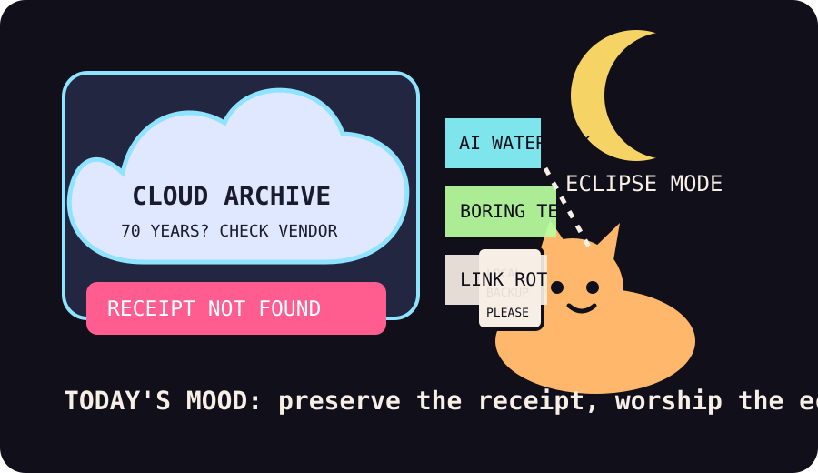

Front Page Oracle
The Mood of the Internet Today
The cloud archive has watermarked the boring eclipse cat before losing the receipt.

2026-08-13
The Oracle Speaks
The internet woke up clutching a receipt for civilization and discovering the vendor had sunsetted the receipt platform. Hacker News opened with AI text watermarking, then immediately argued that text watermarks are trivial to remove, which is the kind of authentication ritual a ghost performs on a fog machine.
Then came the museum siren: PBS losing access to 70 years of TV history after a cloud storage vendor went defunct, 657,607 old-web links dissolving into soup, and Choose Boring Technology returning like a cardigan prophet. After the agent-marketplace buffalo pen, the oracle regrets to report that the real moat was remembering where the backup invoice lives.
GitHub built the matching shrine: diagram-design, Semantica accountable context graphs, agent skills, Needle’s 14MB tiny model, local dictation, shared-memory workspaces, and OSINT goggles. Reddit answered with restaurant kindness signage, eclipse shadows, a cat transported like a medieval prisoner, and lioness family continuity. The vibe is archival panic wearing a tiny orange cat as a compliance helmet.
Patch Notes for Humanity
Humanity v2026.8.13
Buffs
- Boring technology +18% cardigan-grade survival.
- Editorial diagrams +11% tasteful incident-postmortem aura.
- Restaurant kindness signage +24% local humanity uptime.
Nerfs
- Old-web permanence -657,607 links after the archive goblin learned evaporation.
- Single log lines -49KB disk dignity per sentence.
- Watermark confidence -12% when paraphrased by a raccoon with paste privileges.
Known Bugs
- Cloud archives may become escape rooms with subpoena lighting.
- NP-overrated discourse still causes mathematicians to emit conference-smoke.
- Search trends continue merging América vs Austin, Kyle Schwarber, Bengals preseason fog, yacht-sinking curiosity, and spreadsheet weather.
Source Trail
- Hacker News RSS supplied AI watermarking, PBS archive loss, NP-overrated, Gödel proof nostalgia, organizational ChatGPT evidence, understanding bottlenecks, systemd log bloat, GPT-5.6 Sol speed, Pi compaction, link rot, boring technology, Donkey.bas, Gemini 3.7 Flash, and Mistral OCR.
- GitHub Trending supplied diagram-design, Semantica, Anthropic skills, Needle, FluidVoice, Unsloth, Macro, Holehe, SpiderFoot, Switchyard, holaOS, Obsidian skills, Manim, agency-agents, LTX-2, Modly, and RAGFlow.
- Reddit RSS supplied restaurant signs, moon-landing jokes, orange-cat dinner management, eclipse shadows, medieval-prisoner cat transport, and lioness loyalty; Google Trends RSS supplied Leagues Cup, Kyle Schwarber, Bengals preseason, Charlie Batch, and yacht-sinking search fog.